×

Nusa Penida: Bali'den Yapacağınız Unutulmaz Bir Ada Kaçamağı
Bali’den tekneyle kısa bir yolculukla ulaşılan Nusa Penida, uçurumların tepesinden okyanusu izleyeceğiniz, harika turkuaz koylarında ferahlayacağınız ve doğanın gücünü hissedeceğiniz bir ada.
Nusa Penida Seyahat Rehberi
Bali’deki Sanur Limanı’ndan hızlı tekneyle Nusa Penida’ya yaklaşık 45 dakikada ulaşabiliyorsunuz.
Bali kadar turistik değil, daha çok bakir bir yer hissine sahip, kendi halinde bir ada. Yeme içme
seçenekleri
kısıtlı; lüks otel ve resort seçenekleri de neredeyse yok.
Nusa Penida’ya gezi planlıyorsanız, adada biraz sabırlı olmaya hazırlanın. Bali’ye göre daha sakin
ve dağınık bir havası var; yolların bazıları bozuk, bir noktadan diğerine ulaşmak da tahmin
ettiğinizden uzun sürüyor. Ama manzaralar? İnanılmaz.
Adanın geçmişiyle ilgili anlatılanlar da en az manzaraları kadar ilginç. Bali efsanelerinde Nusa
Penida, Bali’ye felaket getirdiğine inanılan Macaling adlı ruhla anılıyor. Rivayete göre Macaling
Bali’den adaya sürülmüş; bu yüzden Nusa Penida bir dönem lanetli olarak görülmüş.
Bugün ise insanlar Nusa Penida’ya adayı keşfetmek için geliyor. Ben
burayı hep “erken kalkıp bütün günü keşfe ayırmalık” bir yer olarak anlatıyorum. Film sahnesinden
çıkmış gibi görünen uçurumlar, kıyıya inen yollar ve her virajda karşınıza çıkan okyanus
manzaraları... Adanın tadını çıkarmak için acele etmeden vakit ayırmak gerekiyor.
Seyahatinizi Planlayın(Kullanışlı Bağlantılar)
Seyahatlerimizi planlarken kullandığımız araçlara göz atın.
Burada yer alan bağlantılar bağlı kuruluş (affiliate) linkleridir.
Bu linkleri kullanarak blogumuzu sürdürmemize yardımcı oluyorsunuz.
Sizin için herhangi bir ek maliyet oluşturmaz, ancak bizim misyonumuzda büyük fark
yaratabilir.
🌿
🏨Size en uygun oteli bulun. Rezervasyonlarınızı Booking.com üzerinden yapabilirsiniz.
✈️En uygun uçuş fiyatlarını Skyscanner.com adresinden bulabilirsiniz.
🎟️Çevrim içi tur ve etkinlik rezervasyonları için GetYourGuide.com kullanın.
🏕️Yürüyüş, kamp, bisiklet ve daha fazlası için Decathlon.com geniş bir yelpaze sunuyor.
Nusa Penida Gezi Haritası
Nusa Penida’da gezilecek yerleri, plajları ve yeme içme duraklarını bu haritada işaretledim. Adayı keşfederken bu harita da size küçük bir yol arkadaşı olsun.
Gezilecek Yerler
1 Broken Beach
2 Angel’s Billabong
3 Kelingking Beach, T-rex
4 Diamond Beach
5 Atuh Beach
6 Tembeling Beach & Forest
7 Crystal Bay
7 Manta Seyir Noktası
Yeme İçme
1 Tropiz Island
2 Coco Penida Restaurant & Bar
3 Abbar Resto
4 Mambo Beach Restaurant & Bar
5 Penida Espresso
6 Warung Yami
Broken Beach
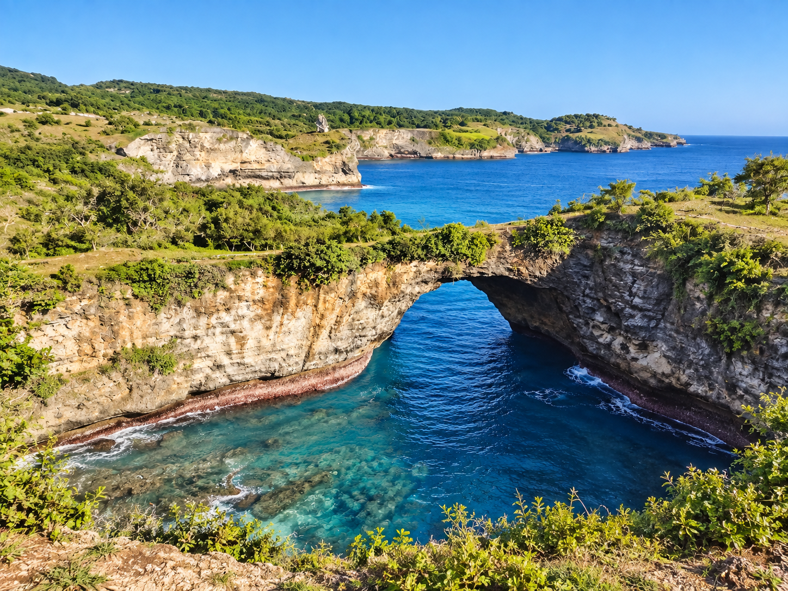
Broken Beach’in en etkileyici yanı, kayalıkların arasında oluşan büyük doğal kemer. Deniz
dalgaları kayaları uzun zaman boyunca aşındırarak önce bir mağara oluşturmuş. Mağaranın tavanı
zamanla çökünce geriye bu enfes dairesel koy ve denize bakan taraftaki kemer kalmış.
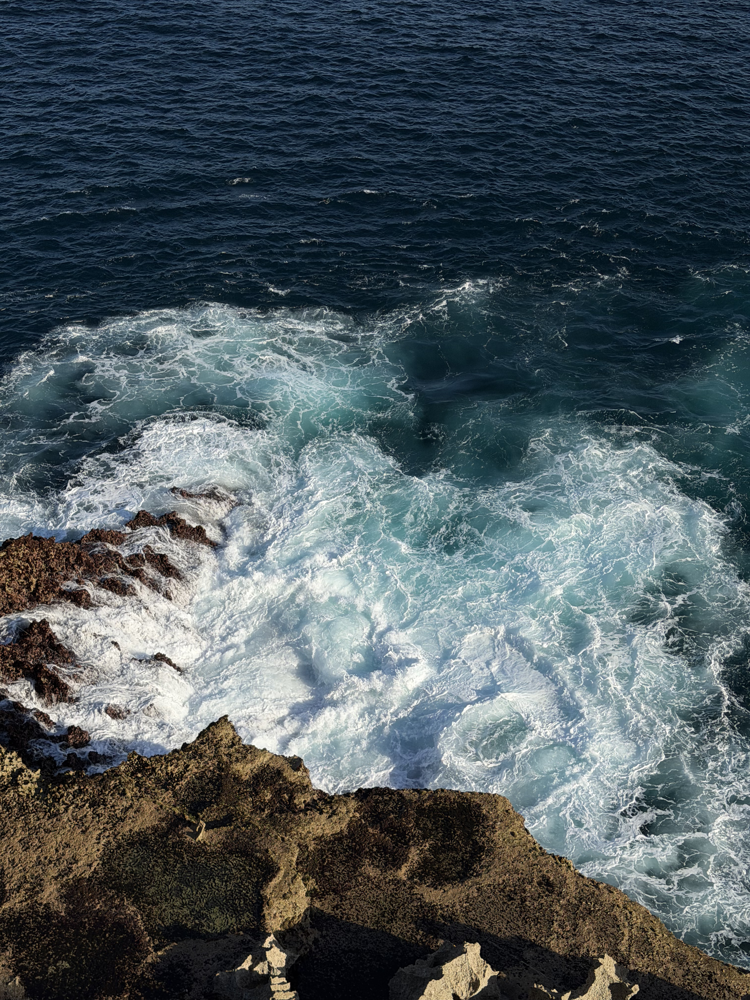
Koyun çevresinde dolaşıp manzarayı farklı açılardan izleyebilirsiniz. Adında “beach” geçse de burası denize girebileceğiniz bir plaj değil. Buraya daha çok doğal kemeri ve çevresindeki manzarayı görmek için geliyorsunuz. Hava açıksa mavi deniz, beyaz köpükler ve kayalıkların görüntüsü gerçekten harika.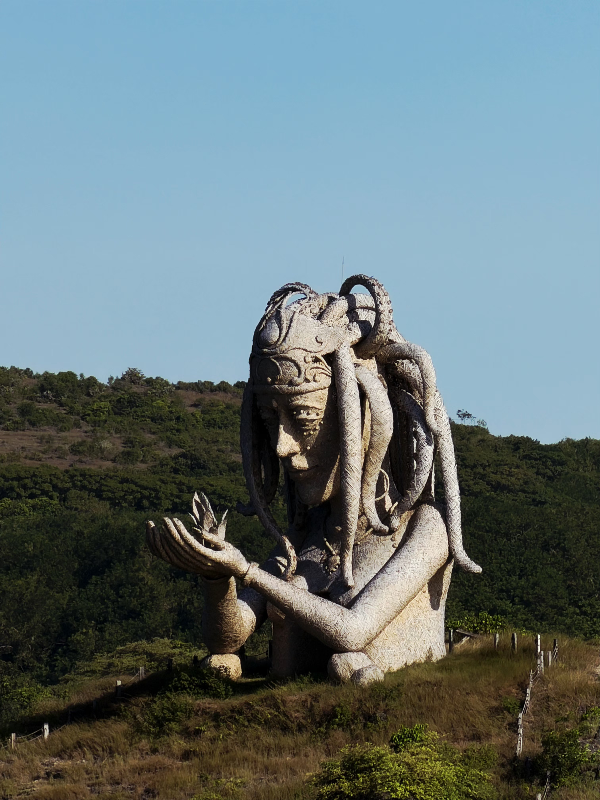
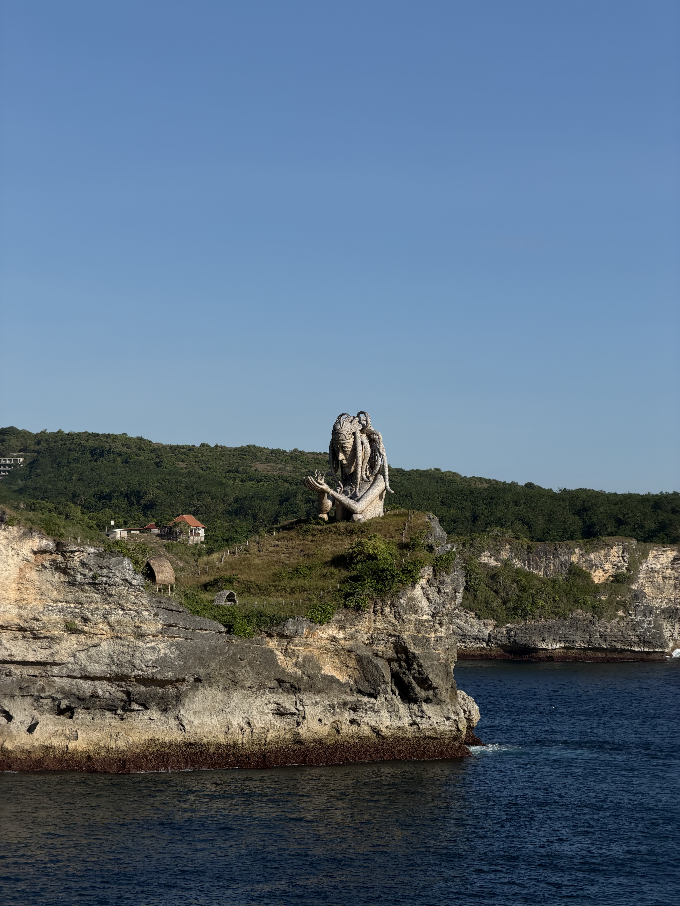
Angel’s Billabong
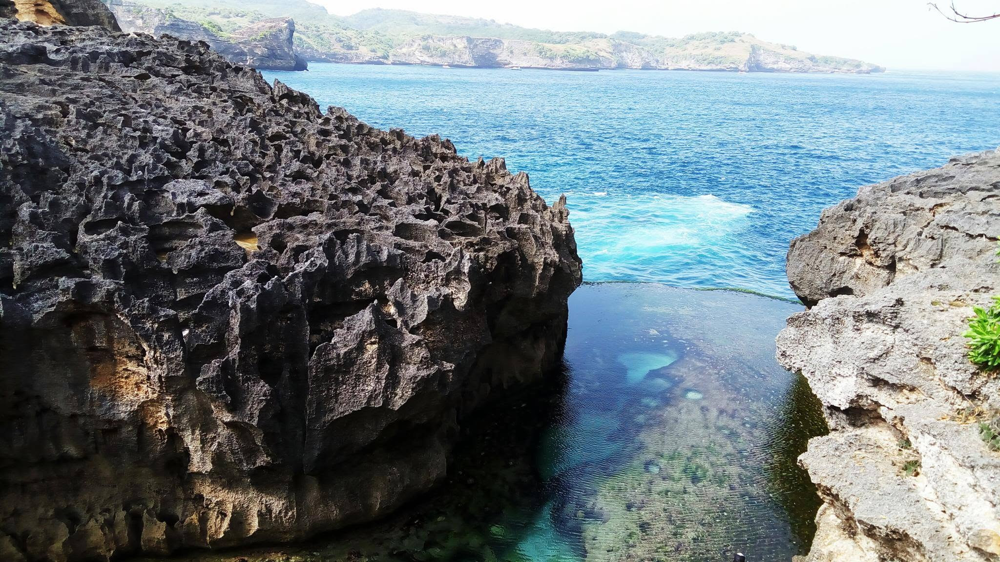
Broken Beach’ten sonra 5 dakikalık bir yürüyüşle Angel’s Billabong ulaşıyorsunuz. Burası kayaların
arasında oluşmuş
harika bir sonsuzluk havuzu. Suyu sakin ve berrak olduğunda içine girmek cazip gelebilir ama burası
açık okyanusa bağlı.
Ben buradayken havuza giriş kapalıydı, yerliler güvenlik amaçlı demişlerdi. 2025'te tamamen
yasaklanmış.
Çünkü dalgalar bir anda
yükselip kayalara vurabiliyor ve insanları açık denize sürükleyebiliyor. Bu yüzden su sakin görünse
bile bariyerleri geçmeyin.
Kelingking Beach, T-rex
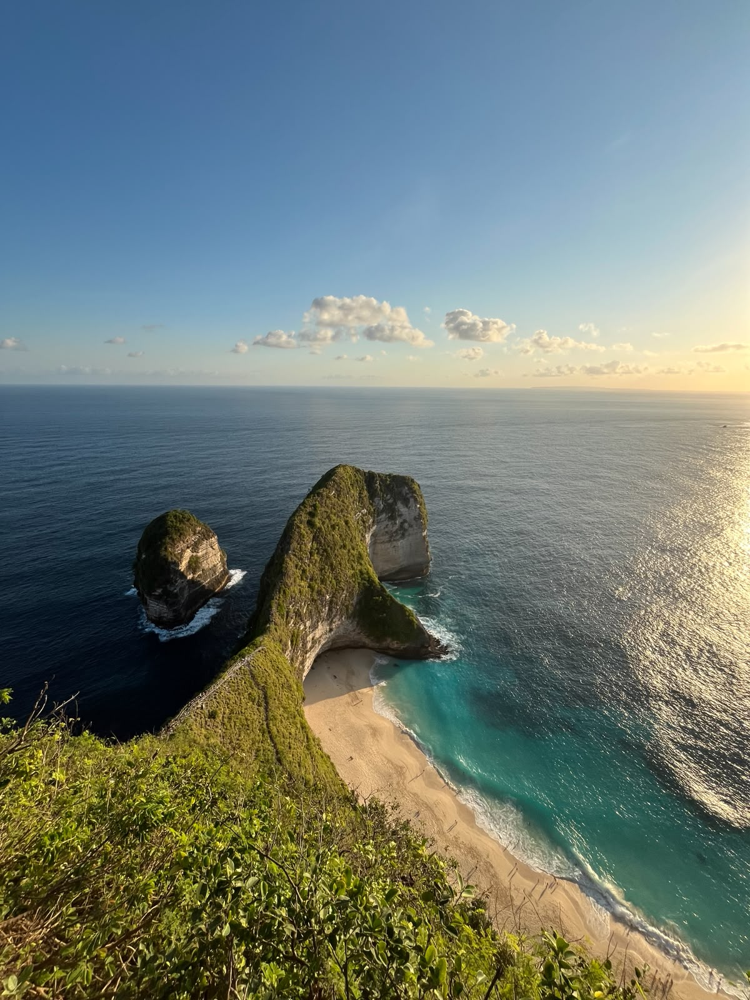
Nusa Penida’nın en meşhur manzaralarından biri Kelingking Beach. Yukarıdan baktığınızda, denize doğru
uzanan kayalıklar T-Rex’i andırıyor. Burası o kadar etkileyici ki Bali’ye gelen birçok kişi
Kelingking’i görmek için Nusa Penida’ya geçiyor. Ama çok kalabalık olabildiğini baştan söyleyeyim.
Mümkünse sabah erken saatlerde gidin.
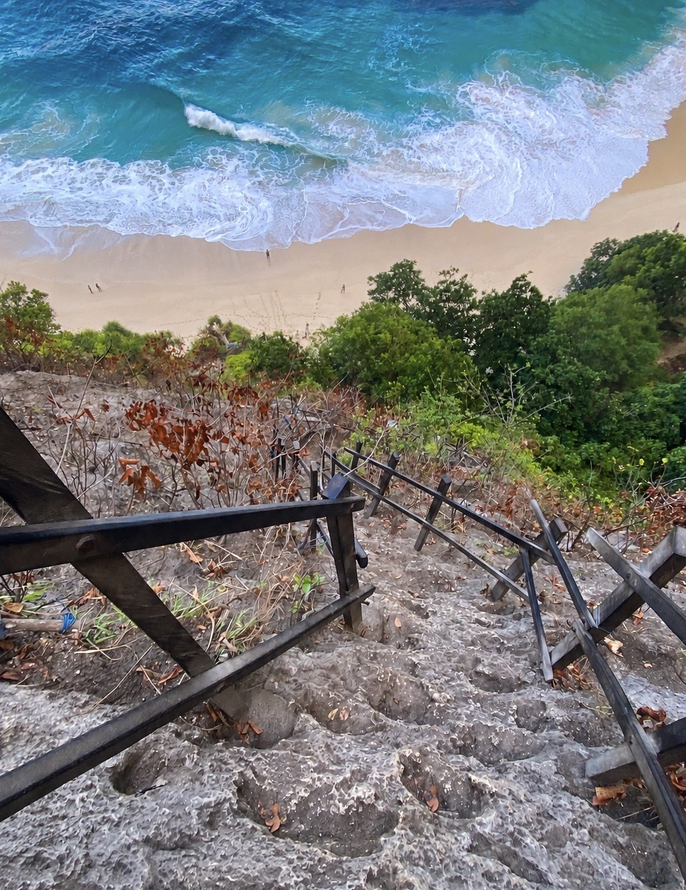
Kelingking Plajı’na inmekse tam olarak bir macera ve hiç de kolay değil. Yol dik basamaklarla başlıyor, sonra tahta korkulukların olduğu dar bir patikaya dönüşüyor. Çok keyifli fakat yer yer gerçekten zorlayıcı. İniş yaklaşık 30 dakika sürüyor, dönüşteki tırmanış ise molalarla bir saati bulabiliyor. Sıcakta daha da yorucu olabileceği için yanınıza mutlaka su alın ve kaymayan ayakkabılar giyin. Sakın terlikle falan inmeye kalkmayın.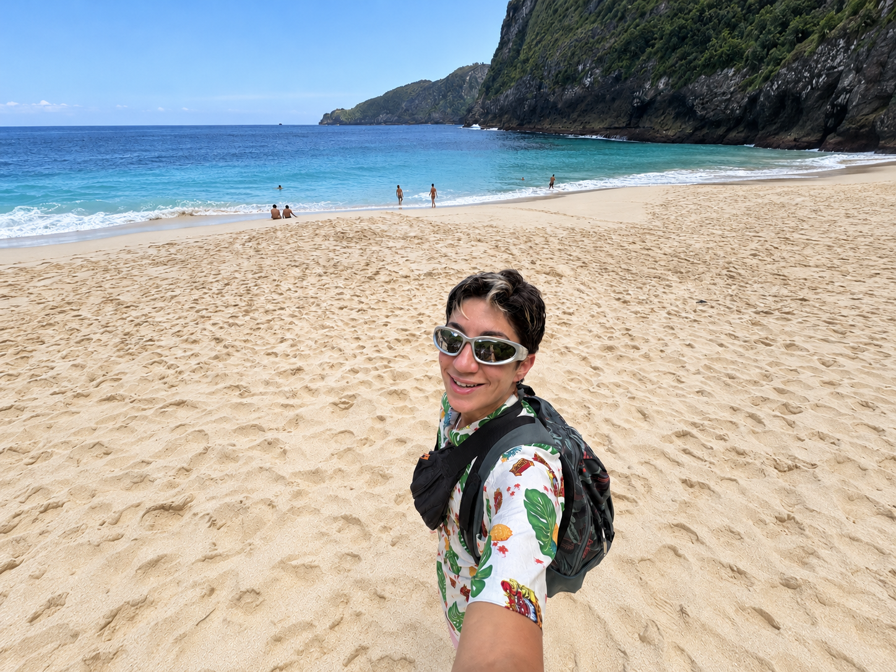
Kuma ulaştığınızdaysa bütün o inişin yorgunluğu saniyeler içinde yok oluyor resmen. Ben “İyi ki inmişim” dedim. Plaj tamamen bakir, hiçbir şey yok; sadece yumuşak kum, yüksek kayalıklar ve okyanusun sesi var.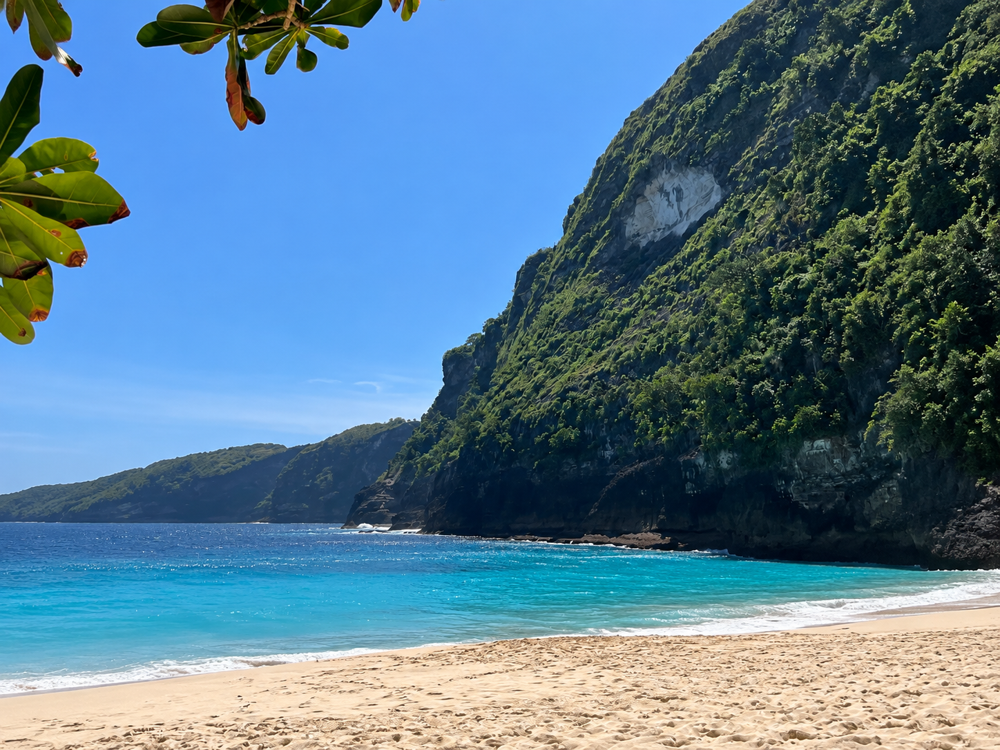
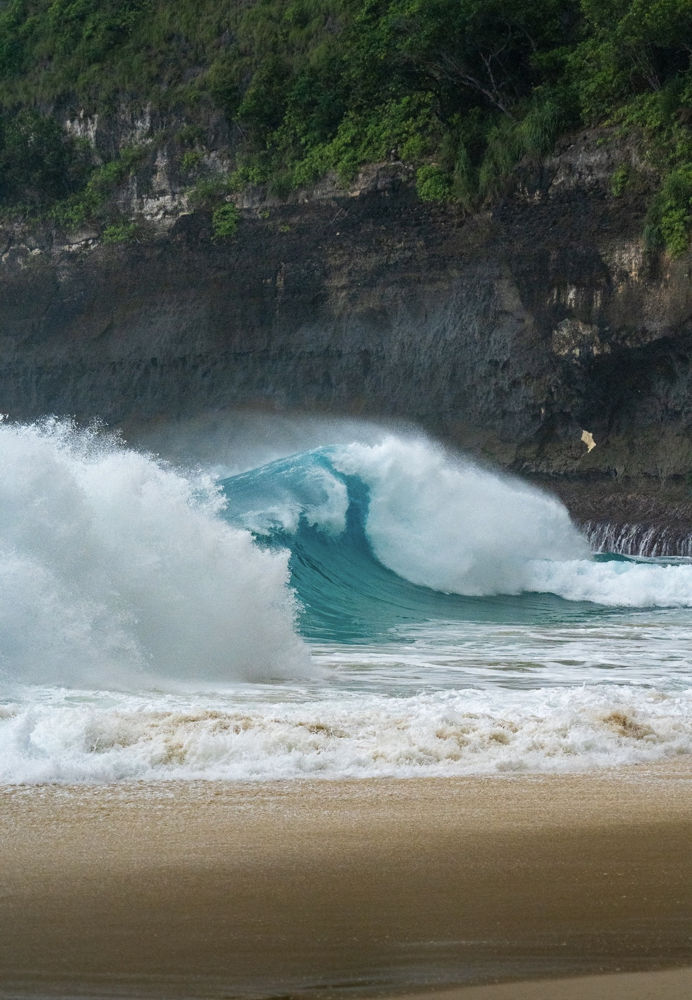
Ben denize de girdim. Okyanusta yüzmek benim için unutulmaz bir deneyim oldu. Yine de burada çok dikkatli olmak gerekiyor. Sabah sakin görünen deniz bir anda dalgalanabiliyor ve dalgalar gerçekten çok kuvvetli. Deniz konusunda kendinize güvenmiyorsanız kesinlikle suya girmeyin. Benim deneyimim, buranın yüzmek için güvenli olduğu anlamına gelmiyor. Kelingking’le ilgili beni gerçekten öfkelendiren bir konu var: sahile ulaşımı kolaylaştırmak için
başlatılan büyük asansör projesi!!! Böyle bir yapının Kelingking’in doğal bakir halini bozacağını
düşünüyorum. O dik patikayı yürümeyi göze alamayacak pek çok insan da sahile
inecek ve buranın zamanla kalabalıklaşmasına sebep olacak. İnşaat 2025’te durduruldu ama projenin
geleceği hala kesinleşmemiş. Ben bu projeye kesinlikle karşıyım; desteklemiyor ve tanıtmayı da
tercih etmiyorum. Siz de benim gibi düşünüyorsanız lütfen desteklemeyin.
Kelingking’le ilgili beni gerçekten öfkelendiren bir konu var: sahile ulaşımı kolaylaştırmak için
başlatılan büyük asansör projesi!!! Böyle bir yapının Kelingking’in doğal bakir halini bozacağını
düşünüyorum. O dik patikayı yürümeyi göze alamayacak pek çok insan da sahile
inecek ve buranın zamanla kalabalıklaşmasına sebep olacak. İnşaat 2025’te durduruldu ama projenin
geleceği hala kesinleşmemiş. Ben bu projeye kesinlikle karşıyım; desteklemiyor ve tanıtmayı da
tercih etmiyorum. Siz de benim gibi düşünüyorsanız lütfen desteklemeyin.
Diamond Beach
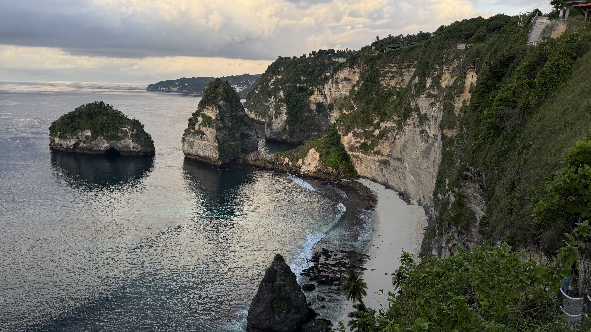
Diamond Beach, Nusa Penida’nın en etkileyici plajlarından biri. Turkuaz denizi, bembeyaz kireçtaşı
kayalıkları ve denizden yükselen sivri kayalarıyla manzara gerçekten kartpostal gibi. İlk gördüğümde
bir süre sadece etrafı seyrettim. Bu harika güzelliğe hayran kaldım.
Bir zamanlar sahile inmek mümkün değilmiş. 2018’de kayalıklara oyulan merdivenler sayesinde artık
aşağıya yürüyebiliyorsunuz. İniş önce merdivenlerle başlıyor, sonlara doğru kayalık bölümü bir ipten
destek alarak geçiyorsunuz. Yaklaşık 15–20 dakika sürse de yol dik ve yer yer zorlayıcı(Kelingking
kadar değil). Parmak
arası terliklerle inmeye çalışmayın; kesinlikle ayakkabı tercih edin. Aşağı inmek
istemezseniz de manzaranın tadını yukarıdaki seyir noktalarından çıkarabilirsiniz.
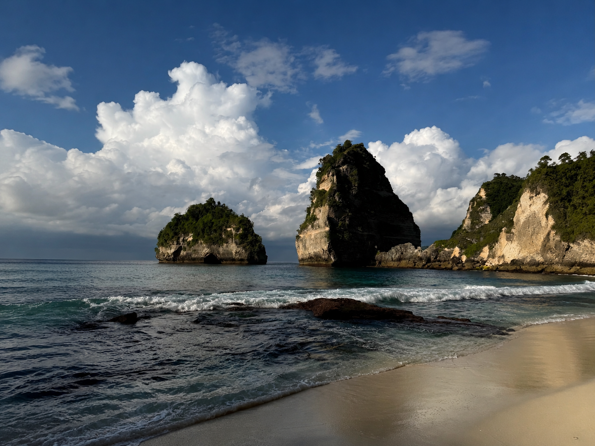
Gelgit durumuna dikkat etmelisiniz. Sular yükseldiğinde plajın büyük bölümü sular altında kalıyor. Alçak gelgitte sahil ortaya çıkıyor ve yürüyebiliyorsunuz. Broken Beach ve Angel's Billabong'da olduğu gibi burada da yüzmek yasak. Bir tabela falan gördüğümü hatırlamıyorum ama dalga ve akıntı çok fazlaymış denizde.Denize hemen 10 dakikalık yürüme mesafesinde olan Atuh Beach'te girebilirsiniz. Diamond Beach, Atuh Beach, Rumah Pohon ağaç evi ve Bin Adalar Manzara Noktası Nusa Penida’nın doğu tarafında ve birbirine yakın. Aynı rota içinde hepsini birlikte görebilirsiniz.
Giriş ücreti hepsini kapsıyor ve 45.000 IDR.
Atuh Beach
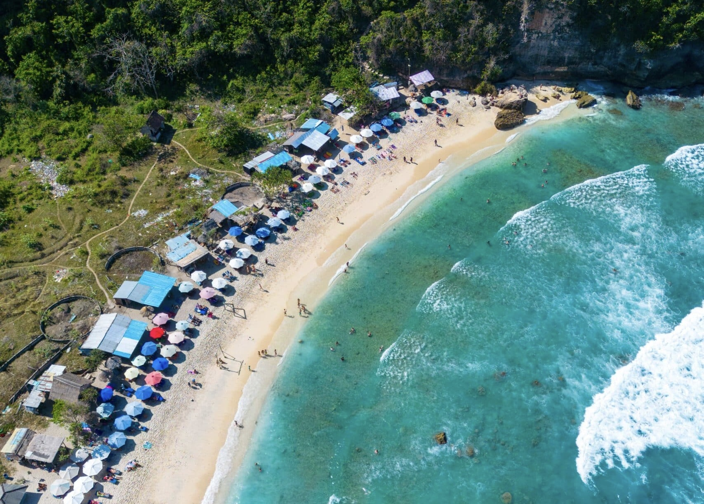
Atuh Beach'te atıştırmalık alabileceğiniz küçük warunglar, tuvalet ve şezlonglar var. Gelgit
çekildiğinde su çok sığlaşıp yüzmesi zorlaşıyor hatta mercanlar bile açığa çıkıyor. Denize
girmeyi düşünüyorsanız gelgitin yükseldiği zamanları tercih etmelisiniz.
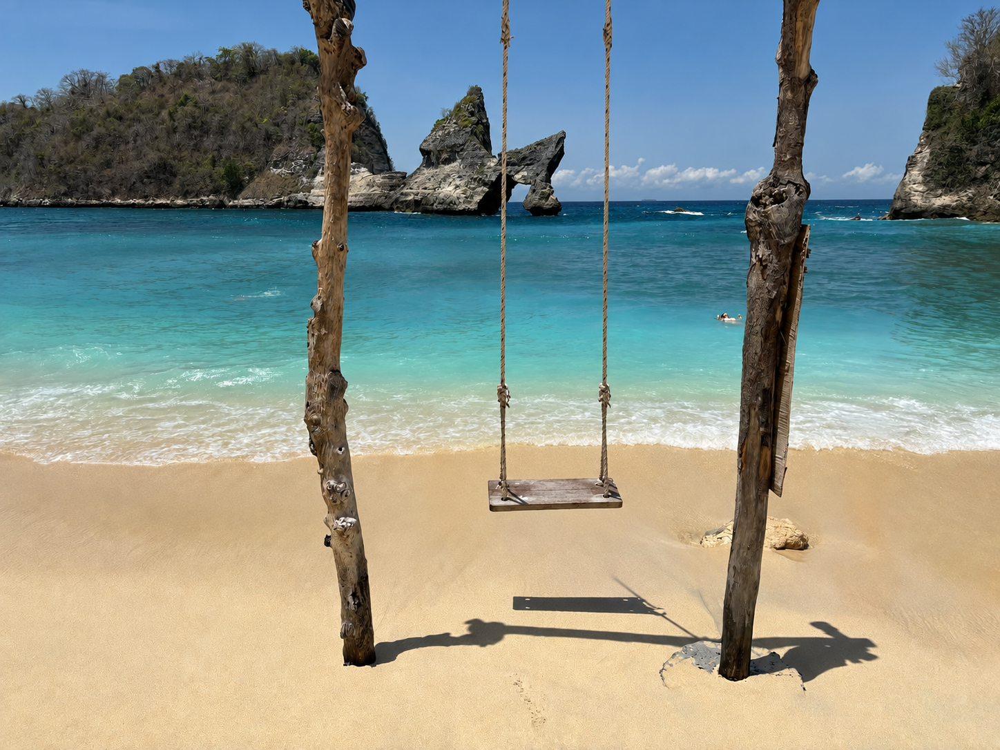
Plajda bu harika salıncakta sallanıp fotoğraf çekinmeyi de unutmayın 🙂Tembeling Beach & Forest
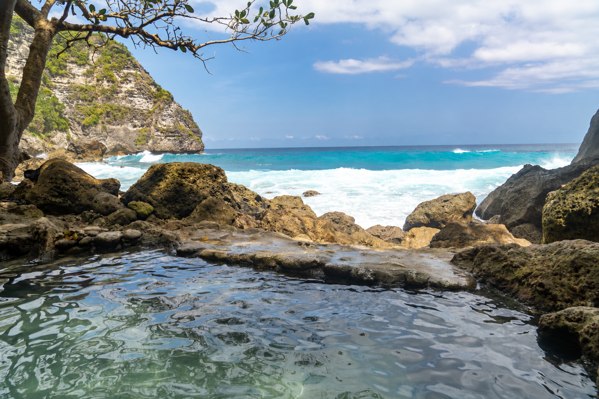
Tembeling Beach and Forest, Nusa Penida’nın güneybatısında yer alan tam anlamıyla gizli bir cennet.
Sahilin hemen yanında, tatlı suyla dolu ve okyanus manzarasına bakan iki doğal havuz var. Hiçbir şey
yapmadan sadece dinlenin ve keyif yapın burada. Ve en güzeli, hiç kalabalık değil günün her saati
gelebilirsiniz çünkü turistik bir yer değil. Turlar buraya gelmiyor. İnsanların çoğu da
bilmiyor.
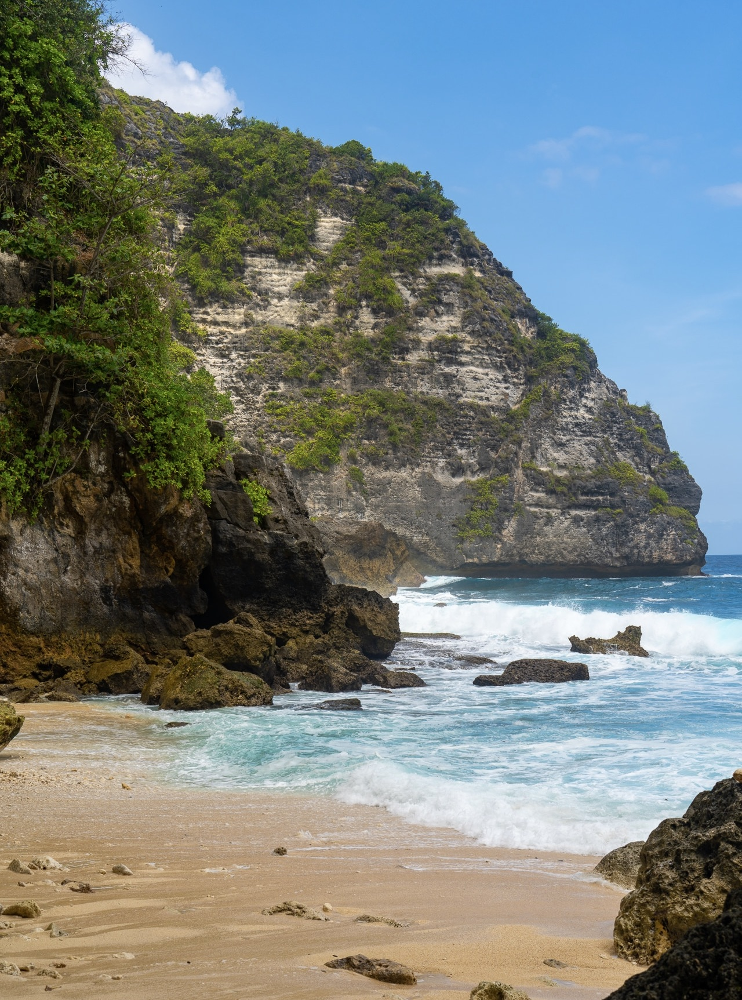
Ana otoparka geldikten sonra aşağı inmek için üç seçeneğiniz var: yerlilerin kullandığı motor taksiye binmek, kendi aracınızla inmek ya da yürümek. Motor taksi gidiş dönüş kişi başı 75.000 IDR. Yerliler yolun çok dik ve engebeli olduğunu söyleyip sizi motor taksiye yönlendirmeye çalışıyorlar, fiyatı da yüksekten açıyorlar kesinlikle pazarlık yapın. Ben kendi motorumla indim ve yol bana zor gelmedi. Yine de motor konusunda kendinize güvenmiyorsanız kendi aracınızla inmeyin; motor taksiyi tercih edin ya da yürüyün. Tabelada 3 km yazsa da yürüyüş yolu yaklaşık 1,8 km ve aşağı yukarı 30 dakika sürüyor.Giriş ücreti 10.000 IDR. Plajın şekli nedeniyle buraya doğrudan güneş ışığı çok az geliyor; güneşi yakalamak için 14.00–16.00 arası daha uygun. Burası yüzmekten çok manzaranın tadını çıkaracağınız bir yer. Dalgalar ve akıntılar genellikle çok güçlü olduğu için denize girmeyin.
Crystal Bay
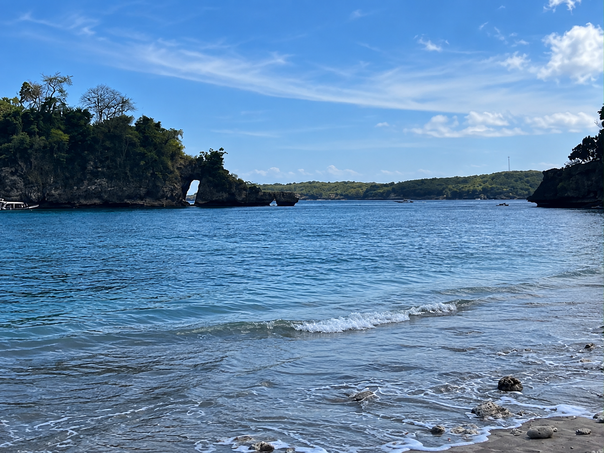
Crystal Bay, çok uzak olmadığı ve kolay ulaşılabildiği için uğraması rahat koylardan biri. Denizi genellikle sakin olduğu için şnorkelle yüzmek için de uygun. Sahildeki küçük warunglarda atıştırmalık bir şeyler yiyip taze hindistan cevizi suyu içebilirsiniz.
Manta Seyir Noktası
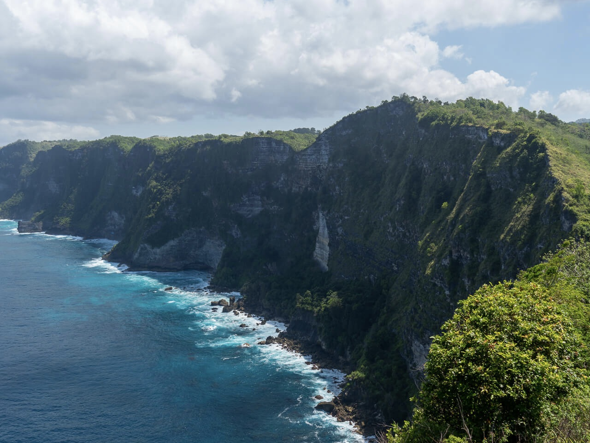
Manta Noktası, Nusa Penida’nın kayalıklarının üzerinde yer alan bir seyir noktası. Aşağıda manta vatozlarını görebilir miyim diye geldim ve şansım yaver gitti. Birkaç dakika sonra yüzen üç manta gördüm.
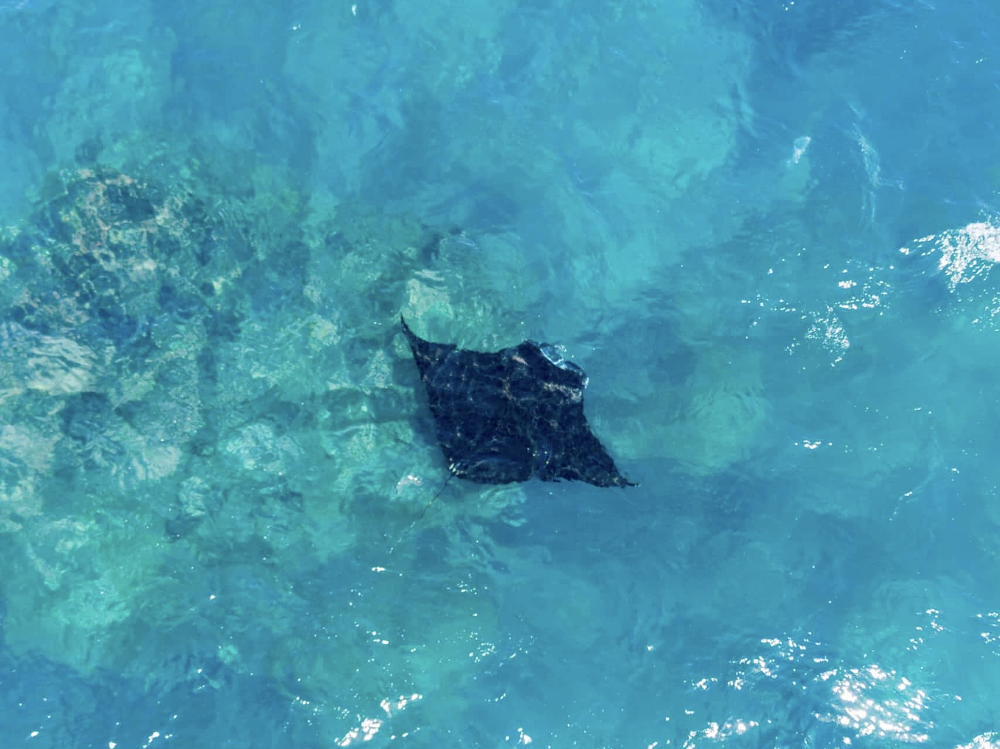
Kanat açıklıkları 8 metreye kadar ulaşabilen bu canlıları yukarıdan izlemek gerçekten etkileyiciydi. Burası çok kalabalık olmadığı için sessiz sakin vakit de geçirebilirsiniz. Yalnız buraya gelirken yolun biraz bozuk olduğunu unutmayın.Manta Vatozlarıyla Şnorkelli Yüzme
Ben bunu kendim denemedim ama konuştuğum kişilerden hep güzel şeyler duydum. Manta vatozlarıyla şnorkelle yüzmek Nusa Penida’daki en popüler aktivitelerden biri ve farklı turlar düzenleniyor.
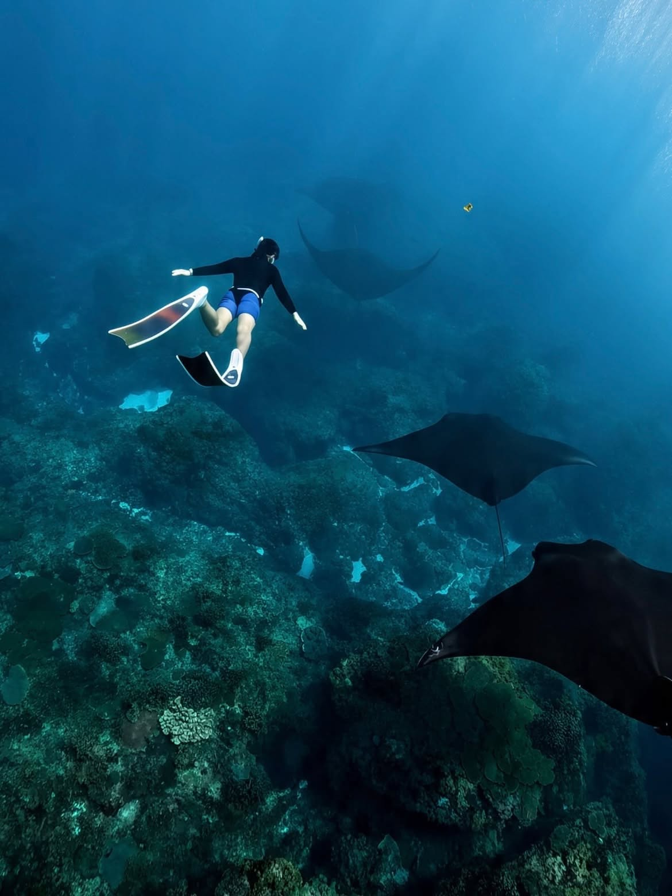
Görüş mesafesi ve manta vatozlarına rastlama ihtimali deniz koşullarına göre değişiyor. Şansınız varsa, bu dev canlıları suyun altında izlemek unutulmaz bir deneyim olabilir.Gitmeye karar verirseniz, güvenlik ekipmanlarını sağlayan ve yerel rehberlerle çalışan güvenilir bir tur seçmeye özen gösterin. Konuştuğum kişilerin anlattığına göre, sabah erken saatlerde manta vatozlarına rastlama ihtimali daha yüksekmiş.
En çok beğenilen en uygun turlardan biri olan Nusa Penida’da 3 Noktada Şnorkel Turu 'nu değerlendirebilirsiniz. Ücretsiz iptal imkanı, GoPro çekimleri içeren bu tur, üç ayrı noktada şnorkelle yüzme deneyimini ve adanın batı tarafını kara turuyla gezmeyi bir araya getirmiş.
Powered by GetYourGuide
Nusa Penida'da Yeme - İçme
Nusa Penida’da yeme içme seçenekleri çok çeşitli değil, ama güzel lezzetler bulabileceğiniz yerler de var. Sevdiğim mekanları aşağıya bırakıyorum. Şimdiden afiyet olsun.
1. Tropiz Island
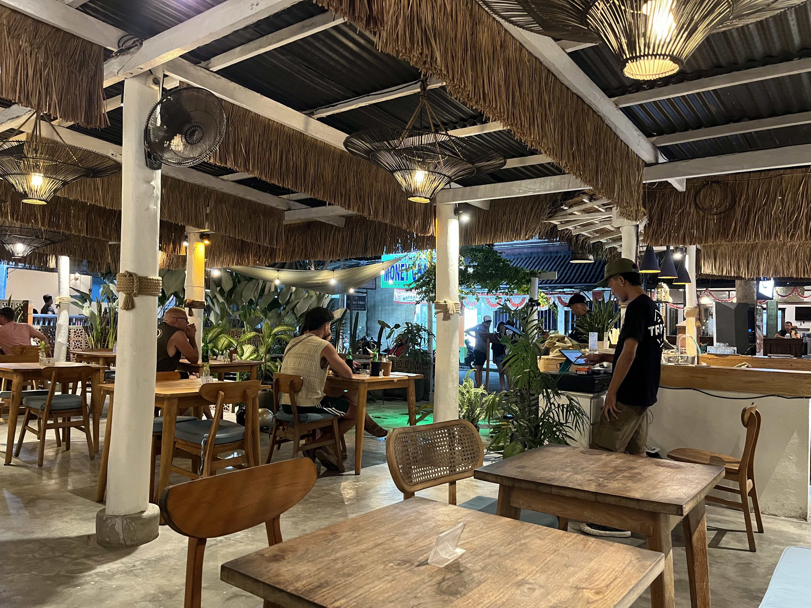
Burada bi akşam yemeği yedim. Menüleri çok çeşitli ve çok lezzetli. Farklı mutfaklardan pek çok seçenek var. Mekanın konsepti de çok hoşuma gitti, sıcak ve keyifli bir ortamı var. Çoğu akşam canlı müzik olması da yemeğe güzel bir hava katıyor.
2. Coco Penida
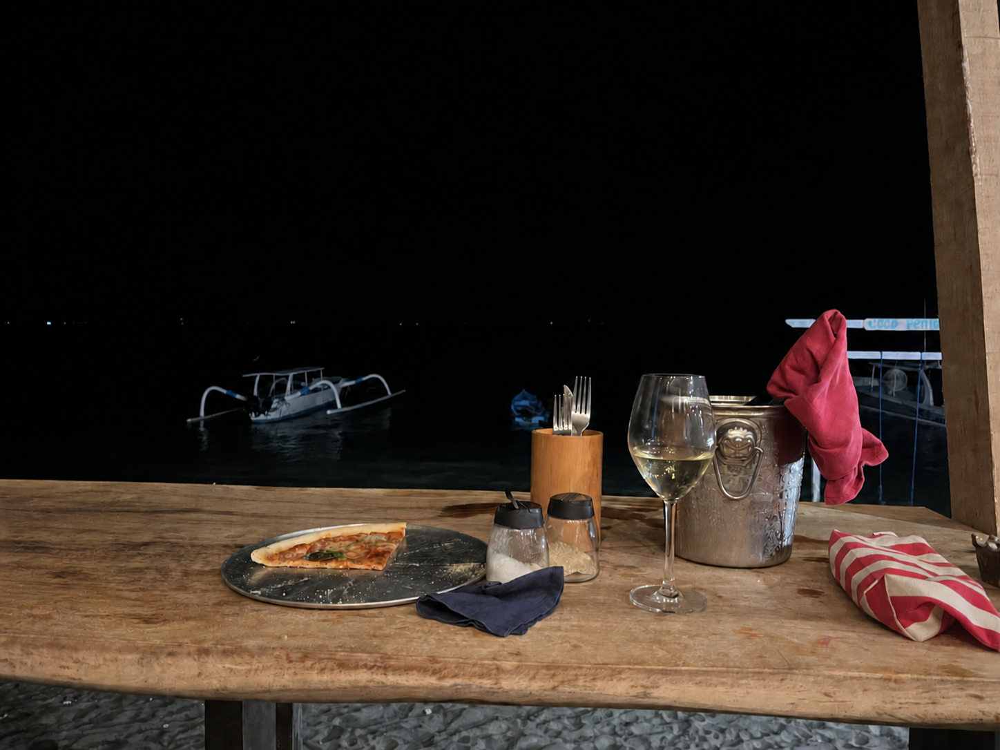
Sahil kenarında, kahvaltıdan akşam yemeğine ya da sadece bir şeyler içmeye kadar günün her saatinde uğrayabileceğiniz zarif bir mekan. Dalga sesleri eşliğinde kaliteli vakit geçireceğinizi garanti edebilirim. Ortamı çok sakin ve rahatlatıcı. İster minderlerde oturun ister masada, romantik bir akşam yemeği için de güzel bir tercih. Ben pizza yedim, çok lezzetliydi. Şarap seçerken mekan sahibi yanıma gelip çeşitleri tek tek anlattı, tattırdı ve seçim yapmama yardımcı oldu. Kalkmadan önce yemeği ve şarabı nasıl bulduğumu sorması da çok hoşuma gitti. İlgisi ve sıcaklığıyla akşamımı güzelleştirdi.
3. Abbar Resto
Abbar Resto, Diamond Beach’e yakın, Endonezya ve Batı yemeklerini bir arada bulabileceğiniz samimi bir mekan. Porsiyonları büyüktü, fiyatları da uygundu. Smoothie kaselerini özellikle çok sevdim.
4. Mambo Beach Restaurant
Sakin bir sahil mekanı. İlk başta sadece bir şeyler içmek için uğramıştım. Sahilin hemen kenarındaki sakin ortamı hoşuma gidince menüsüne de şans verdim. Yemekleri de gerçekten başarılıydı. Deniz kenarında bir şeyler içip manzaranın keyfini çıkarmak için güzel bir yer.
5. Penida Espresso
Kahvaltılarını çok başarılı buldum. Smoothie bowl, pankek ve yumurtalı seçenekler arasından seçim yapabilirsiniz. Kahvesi de iyiydi. E daha ne olsun. Nusa Penida’da kahvaltı için değerlendireceğiniz yerlerden biri.
6. Warung Yami
Lezzetli vejetaryen ve vegan seçenekleri olan harika bir yerel warung (Endonezya'daki küçük ve yerel işletmeler). Yemeklerdeki körilerinin aroması çok başarılıydı.
Nusa Penida'da Konaklama
Ben Nusa Penida’da dört gün kaldım ve bu süre bana yetti. Ama her gün sabahtan gün batımına kadar dışarıdaydım. Daha sakin bir tempoda gezmek isterseniz beş-altı gün ayırabilirsiniz. Ben dört gün boyunca adanın batı tarafında, aynı yerde konakladım ama şimdi olsa konaklamamı ikiye bölerdim. Ada büyük ve yollar yer yer bozuk olduğu için iki farklı bölgede kalmak yolda geçireceğiniz zamanı azaltabilir. Ayrıca doğu tarafı daha sakin. Okyanus manzarasına uyanıp Diamond Beach’e kalabalıklar gelmeden yürümek de ayrı güzel olabilir.
İlk durak: Toyapakeh
Ben limana yakın, adanın hareketli bölgelerinden biri olan Toyapakeh’te kaldım. Kafe
ve restoran seçenekleri fazla, günlük ihtiyaçlarınızı karşılamak kolay. Dalış yapmayı
planlıyorsanız bölgede dalış merkezleri de çok fazla. Ayrıca batı ve güneybatı
tarafındaki Crystal Bay, Broken Beach, Kelingking Beach ve Tembeling
Beach gibi
yerleri keşfetmek için de iyi bir başlangıç noktası.
Toyapakeh; adaya ilk kez gelenler, dalış yapmayı planlayanlar ve
çevresinde daha çok seçenek olsun isteyenler için
oldukça uygundur.
Sonra doğu tarafı
Batı tarafını gezdikten sonra konaklamanıza Diamond Beach ve Atuh
Beach'in olduğu doğu tarafında devam etmenizi
tavsiye ederim. Diamond Beach’e yakın bir yer seçerseniz gün doğumunda plaja yürüyerek
inebilirsiniz.
Manta Seyir Noktası'nı da doğu tarafında kaldığınız günlerde rotanıza
ekleyebilirsiniz. Bu
bölge Toyapakeh’e göre daha sakin ve daha az gelişmiş. Yine de güzel kafeler ve
işletmeler var.
Adanın doğu tarafı ise; çiftler, gün doğumu sevenler ve kalabalık yerine doğayı tercih edenler
için uygundur.
Nusa Penida'daki En İyi Oteller
Nusa Penida’da konaklayabileceğiniz ve adayı gezdikten sonra benim de gönül rahatlığıyla rezervasyon
yapacağım otelleri bu bölümde bir araya getirdim.
Limana yakın, bütçe dostu bir yerden uçurum kenarındaki şirin bir villaya ya da okyanus manzaralı
sakin bir konaklamaya kadar farklı seçenekleri araştırdım. Şimdi size, seyahat tarzınıza en uygun
olanı bulmak kalıyor.
⭐️ Toyapakeh Bölgesindeki Oteller
Limana, kafelere ve dalış merkezlerine yakın, uygun bir konaklama yeri arıyorsanız, Toyapakeh en iyi seçenek. Hareketli ama aynı zamanda sakin bir yer; uzun yolculuklara gerek kalmadan batı kıyısının önemli noktalarını keşfetmek için mükemmel.
1. Kurnia Guest House & Spa $
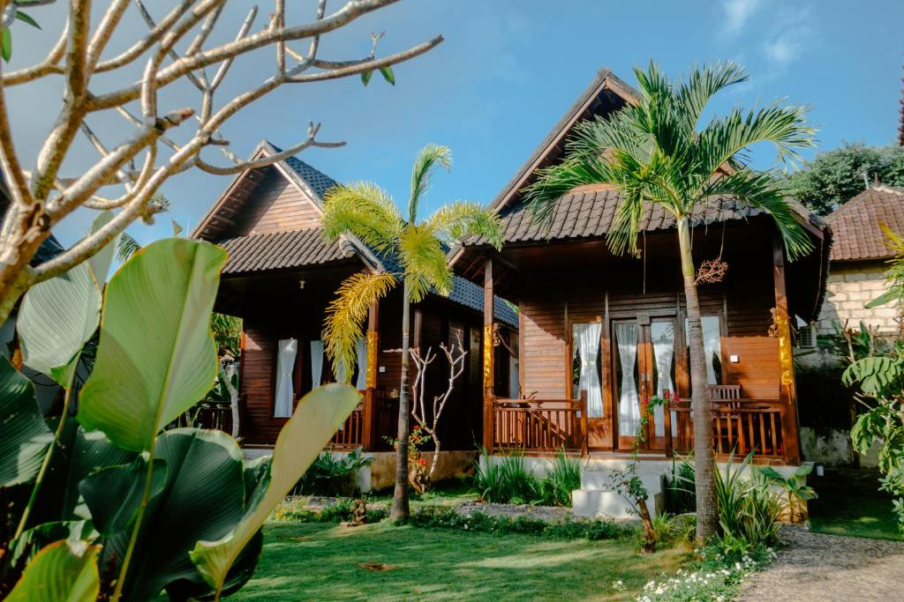
Toyapakeh’te, limana yakın ve feribottan indikten sonra ulaşımı kolay bir konumda.
Odalar sade, temiz ve rahat. Küçük havuzu ve otel bünyesindeki spa’sı da ada keşfinden sonra
dinlenmek isteyenler için güzel bir artı.
Daha kısıtlı bir bütçeyle seyahat eden herkes için burası tam aradığınız yer: uygun fiyatlı, samimi
ve adayı keşfetmeye başlamak için çok iyi bir konumda.
2. Blue Harbor Beachfront Villas & Resto $$
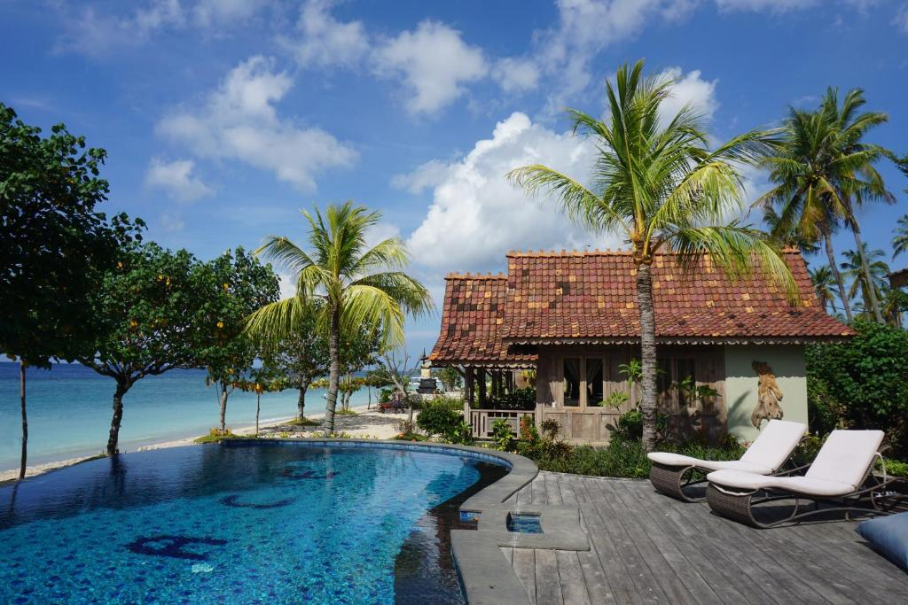
Toyapakeh’te, denizin hemen kıyısında yer alan bu konaklama yeri, okyanus manzarası ve biraz daha
fazla konfor arayanlar için güzel bir seçenek. İki açık havuzu ve Endonezya ile Batı yemekleri sunan
sahil kenarında bir restoranı var. Yakınlarda yürüyerek ulaşabileceğiniz kafeler ve dalış merkezleri
de bulunuyor.
Gün batımında sahilin havası oldukça sakin. Personelin ilgili olması da konaklamayı güzelleştiren
ayrıntılardan biri. Sadece yola biraz yakın olduğu için ara sıra motosiklet sesi duyabilirsiniz.
Deniz kenarı konumu, mükemmel yemekleri ve konfor ile fiyat-performans
dengesine göre öne çıkan seçeneklerden biri.
3. Pramana Natura Nusa Penida $$$
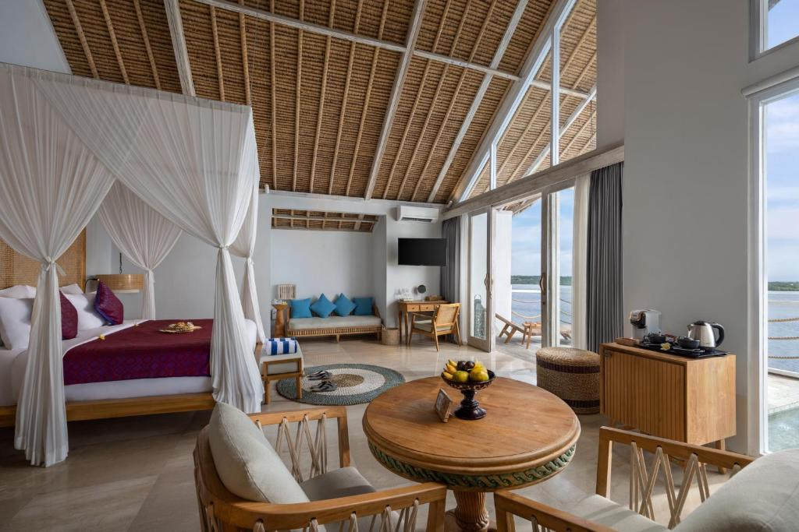
Toyapakeh’in üzerindeki kayalıkların arasına kurulan Pramana Natura Nusa Penida, okyanus manzaralı ve
daha konforlu bir konaklama arayanlar için güzel bir seçenek. Süit ve villaların tamamı denize
bakıyor. Modern tasarımıyla sakin ve dinlendirici bir havası var.
Sonsuzluk havuzu kayalıkların ve okyanusun manzarasını karşısına almış. Tesis içinde spa, restoran
ve bar da bulunuyor. Otele ulaşmak için kısa bir yokuş çıkmanız gerekiyor ama manzarayı görünce buna
değdiğini anlayacaksınız. Nusa Penida’da biraz daha lüks ve huzurlu bir konaklama arıyorsanız
değerlendirebilirsiniz.
⭐️ Doğu Tarafındaki Oteller
Harika manzaralar ve daha sakin bir ada ritmi istiyorsanız, Nusa Penida’nın doğu kıyısında bambaşka bir atmosfer sizi bekliyor. Gün doğumu kayalıkları, el değmemiş manzaralar ve kalabalıktan uzak, ıssız bir ada hissi istiyorsanız burada kalın.
1. Atuh Forest Cottage $
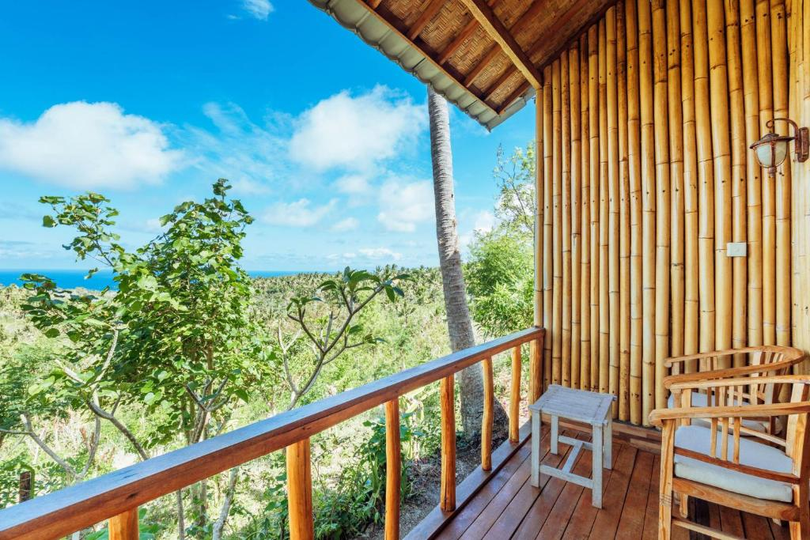
Atuh Forest Cottage, doğu kıyısında Atuh ve Diamond Beach’e yakın, palmiye ve yemyeşil bitkilerin
arasına kurulmuş küçük ahşap bungalovlardan oluşuyor. Odalar sade ve temiz. Doğanın içine saklanmış
hissi veren ortamında kuş sesleri ve tepelerin manzarasıyla güne başlayabilirsiniz.
Tesisin sahipleri sıcakkanlı ve yardımsever, kahvaltı da her sabah taze hazırlanıyor. Bütçe dostu,
otantik ve huzurlu bir konaklama arıyorsanız burası kesinlikle güzel bir seçenek.
2. Aloka Penida $$
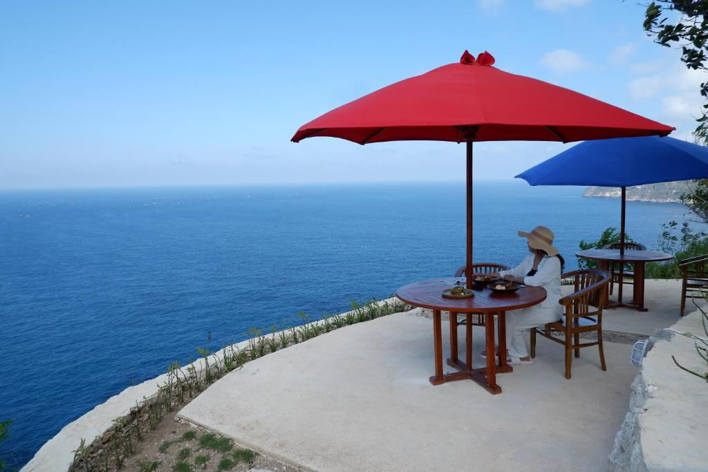
Aloka Penida, Diamond Beach’e yakın konumuyla doğu kıyısını keşfetmek için başarılı bir seçenek.
Aydınlık odaların balkonlarından tepelere ya da okyanusa bakabilirsiniz. Tesisin restoranında yemek
ve kahvaltı servis ediliyor.
br
Otele giderken dik bir yokuş çıkıyorsunuz ama buna değeceğini düşünüyorum. Çünkü manzara
muhteşem. Bütçeyi çok zorlamadan manzaralı ve konforlu
bir konaklama arıyorsanız değerlendirebilirsiniz.
3. Semaya Beach Resort $$$
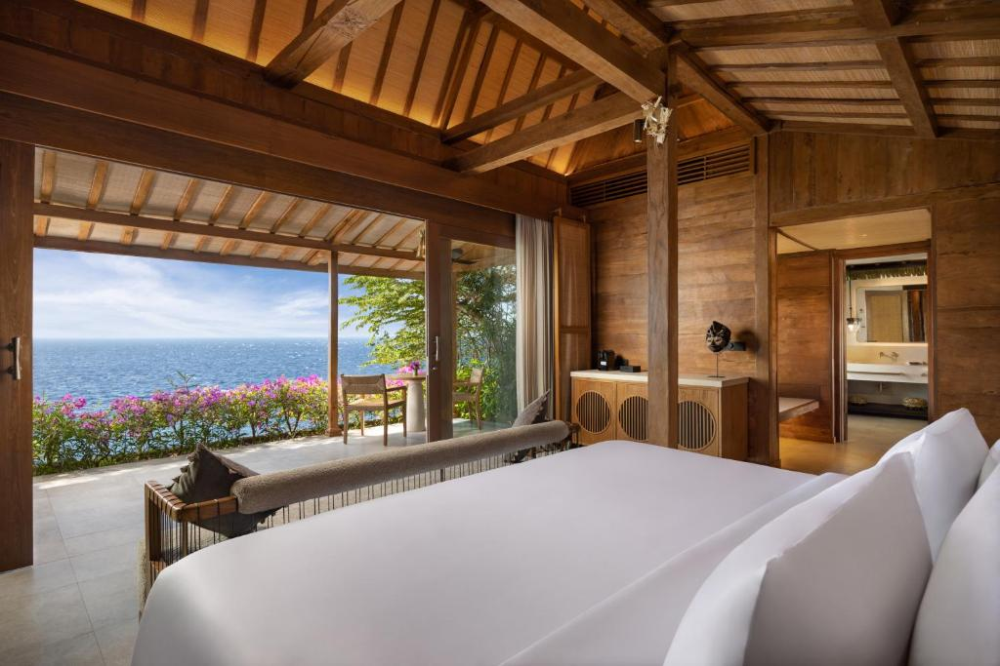
Semaya Beach Resort, doğu kıyısında adımınızı atar atmaz sizi dinginleştiren türden bir yer.
Villaların arasında çok geniş alanlar var. Çevrenin sakinliğinde resmen kendinizi yalnız
hissediyorsunuz.
Biraz rahatlamak, deniz manzarasının tadını çıkarmak ve kendinizi gerçek bir ada
kaçamağında hissetmek istiyorsanız burası tam sizlik.
Odalar gerçekten çok şık ve ferah. Sonsuzluk havuzunda keyif yapabilir, sahil barında içkinizi
yudumlarken
dalgaları izleyerek uzun uzuuun vakit geçirebilirsiniz. İsterseniz yemeğinizi odanıza da
söyleyebilirsiniz.
Diamond Beach’e araçla yaklaşık 20 dakika. Bu mesafeye rağmen buradaki huzur ve
konfor kesinlikle buna değecektir. Doğu kıyısında lüks otel seçeneği pek fazla yok. Gözlerden uzak
havası,
sakin atmosferi
ve rüya gibi bir ada tatili hissini istiyorsanız Semaya Beach Resort kesinlikle en iyi seçenek.
Yorum Yaz
E-posta adresiniz yayımlanmayacaktır. Gerekli alanlar * ile işaretlenmiştir.